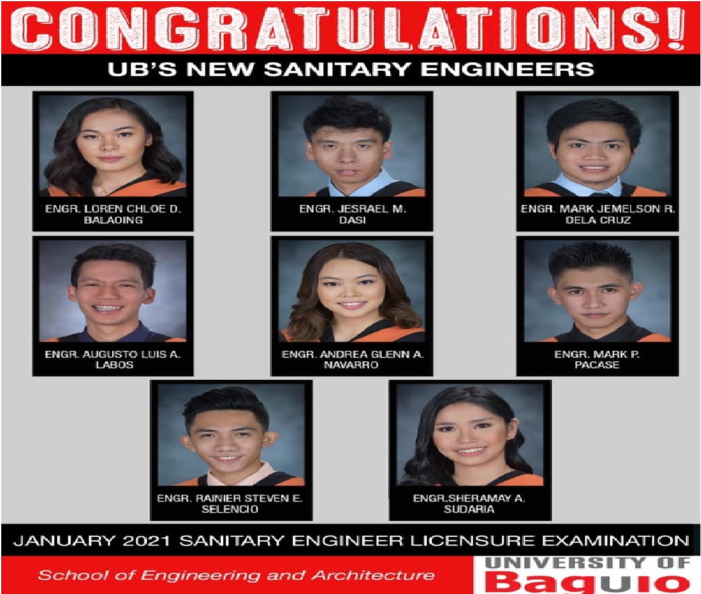
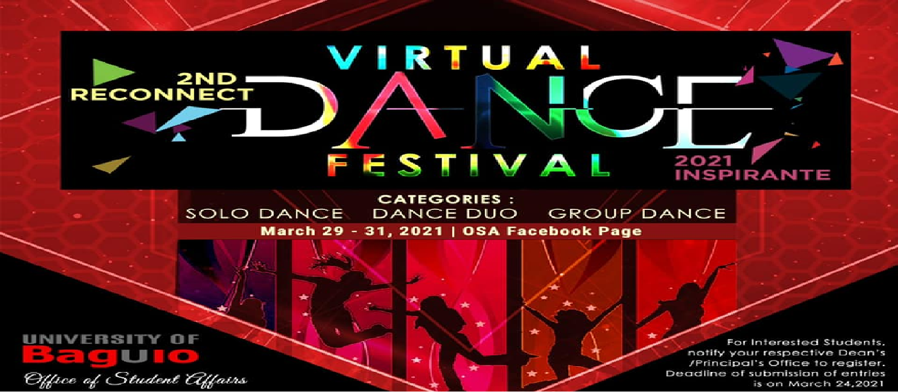

Welcome to University of Baguio!
UB’S NEW SANITARY ENGINEERS
Out of the 48 new Sanitary Engineers who passed the Licensure Examination given by the Board of Sanitary Engineering in Manila last January 2021, 8 are products of the University of Baguio!
Congratulations, Sanitary Engineers! You made your selves, families, and the University of Baguio community proud! Your Alma Mater salutes you!

CONNECT WITH CREATIVITY!
It's that time of the year again in the University of Baguio!
After the success of the 1st Reconnect event, the UB Office of Student Affairs is proud to come back for the second year--this time for a Virtual Dance Festival!
This is open to all currently enrolled University of Baguio students from high school to graduate school! Deadline of submission of entries is on March 24, Wednesday. You may inquire and register through your respective Dean's or Principal's Office.

About University of Baguio